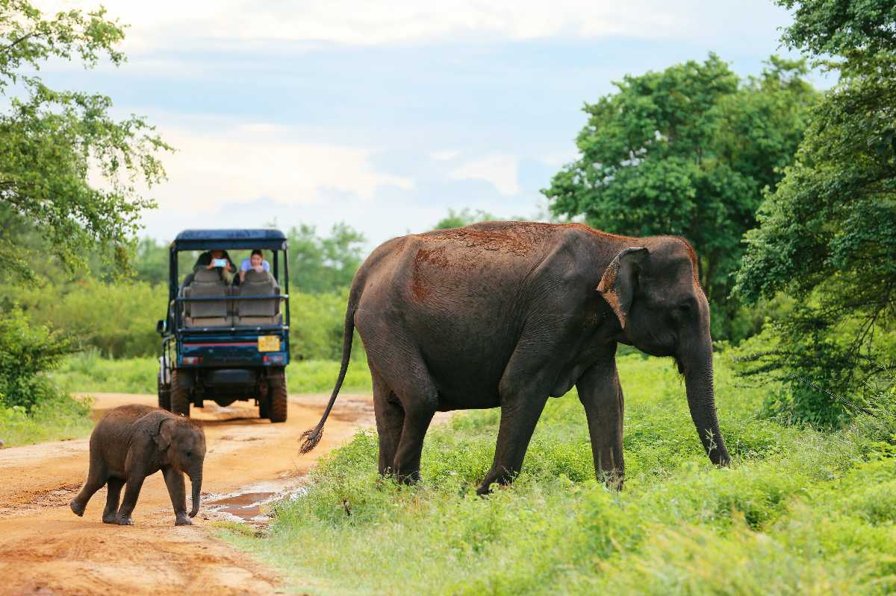
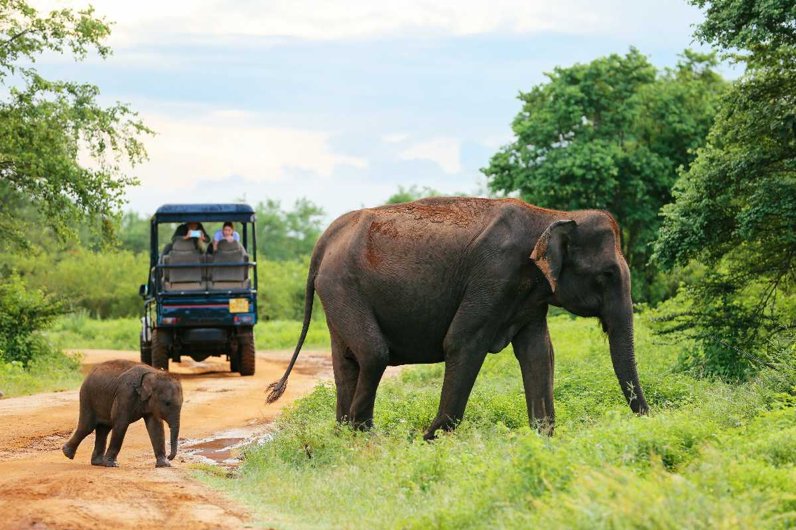
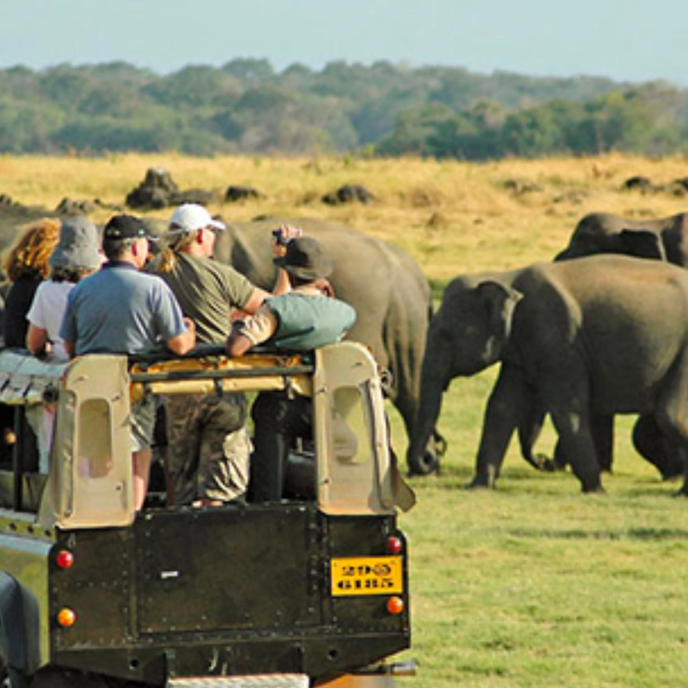
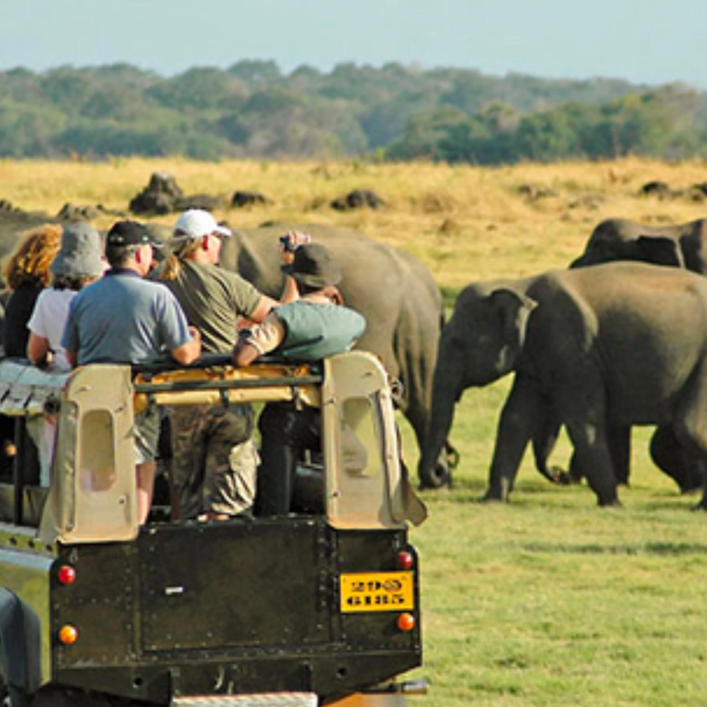

Department of Wildlife Conservation
The Department of Wildlife Conservation (DWC) in Sri Lanka is the primary government agency responsible for the conservation and sustainable management of wildlife resources in the country. Its mission is to protect and preserve the natural heritage of Sri Lanka by implementing policies and programs that ensure the survival and well-being of its wildlife.
DID YOU KNOW
Human-Wildlife Conflict
Human-wildlife conflict refers to the interactions and clashes between human activities and wildlife that result in negative impacts on both parties. This conflict often arises in areas where human development encroaches upon natural habitats, leading to increased competition for resources and space. Agricultural areas, in particular, become flashpoints for conflict as wildlife may damage crops, leading to economic losses for farmers, while humans pose threats to wildlife through habitat destruction and direct conflict.
In Sri Lanka, The Department of Wildlife Conservation (DWC) grapples with the persistent challenge of managing human-wildlife conflict. As urbanization and agricultural expansion continue, humans and wildlife increasingly find themselves sharing the same landscapes, leading to confrontations that jeopardize both community livelihoods and the conservation of diverse ecosystems. The DWC is tasked with finding solutions that strike a balance between protecting agricultural interests and preserving wildlife.
Mitigating human-wildlife conflict involves a combination of strategies, including the development of effective land-use planning, the creation of buffer zones, and the implementation of measures to prevent crop depredation. Additionally, the DWC engages in community outreach and education programs to raise awareness about coexisting with wildlife, promoting tolerance and understanding. By implementing these measures, the department aims to foster a harmonious relationship between humans and wildlife, ensuring the sustainability of both agricultural practices and the diverse fauna that inhabit Sri Lanka's natural landscapes.
 



 

CONCLUSION
The Sri Lanka Department of Wildlife Conservation plays a vital role in safeguarding the country's natural heritage. Through its multifaceted approach, the department aims to balance conservation needs with sustainable development, ensuring that future generations can enjoy the diverse and unique wildlife that Sri Lanka has to offer. It is crucial for the department to adapt to emerging challenges and collaborate with various stakeholders to achieve its conservation goals.